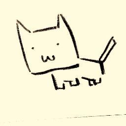
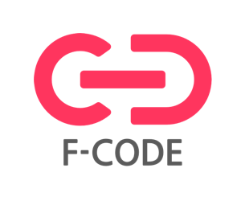

タイムテーブル（セッション/セッション+ハンズオン）
Timetable
※ 変更となる可能性があります
※ ご参加の方は必ず参加登録をお願いします。当日参加枠および当日キャンセル待ち枠はありません。
セッション
| セプテーニ・オリジナルホール | サブホール | サブホール2 | |
|---|---|---|---|
| 10:00 | 10:30 |
受付 | - | - |
| 10:30 | 10:45 |
オープニング | - | - |
| 10:50 | 11:10 |
竹添 直樹
資料
動画
Non-Functional Programming in Scala
ここ最近「Scala界隈は怖い」との風評がありますが、Scalaは元来関数型言語の知識がなくても利用できるよう設計されています。 とはいえ近年のScala界隈にはモナモナしたフレームワーク、ライブラリ、マテリアルに満ち溢れており、関数型プログラミングを避けて生きていくことが難しい状況になってきています。 このセッションではBetter Java言語としてのScalaに再注目し、関数型プログラミングを極力意識せず、かつScalaのメリットを最大限活かすための方法について、プログラミング手法からライブラリやフレームワークの選定に至るまで再考してみたいと思います。 
|
垂水 秀明
ユーザーデータ基盤を１からScalaでつくった話し
ユーザーの行動ログを解析して、様々な条件で解析結果を返すログ分析基盤をSparkや、Akkaを組み合わせてScalaで開発しました。 それぞれをどういう役割のところで利用したのか、そのときに考慮した内容・Scalaで嬉しかったことなどをお話できればと思っています。 
|
尾上 貴子
動画
元インフラエンジニアがScalaを触ってつまづいたところ。
インフラエンジニアが社内でジョブチェンジしてサーバーサイドエンジニアになりました。 知識ゼロなところから、社内のScala研修を受けての学びとつまずいたところを発表します。 最初は謎の文字列にしか見えなかったScalaがプログラミング言語として見えるようになり、「Scalaって怖くないんだ、大丈夫だよ」ということを伝えます 
尾上 貴子4月まで社内システムのインフラリーダーやってました。5月から社内プロジェクトのGANMA!にjoinすることになりScalaの研修を楽しくやってます。 |
| 11:15 | 11:35 |
林 大介(hayasshi)
資料
動画
Scala and Akka apps on Kubernetes in ChatWork
2016年末、ChatWorkはFalconをリリースしました https://speakerdeck.com/j5ik2o/history-of-falcon-the-way-to-production-release 上記の資料にある通り、FalconのScala&Akkaアプリケーションは、Kubernetes上でコンテナとして分散実行されています。 この発表では、Scala&AkkaアプリケーションをKubernetesで運用する上で、デプロイ、メトリクス、ログなどをどのように扱っているか、ChatWorkにおける事例をご紹介します。 |
松下 誠和
資料
動画
[事例紹介] Scalaで物流倉庫業務システム作ったよ
Scalaでの開発、導入実績の事例として、株式会社ティアライン（本人が所属）でスクラッチから開発し保守運用中の物流倉庫業務システムを設計、ソースコードを用いてScala導入の開発メリットなどを解説します。 本システムでは、下記のOSSフレームワークを用いております。 上記のフレームワークに興味がある方や、他の言語とどれくらい違うのか、どれくらい学びやすい言語なのか、を考えている初心者の方やマネージャー層を対象に、少しでもScalaの導入障壁を下げるような事例として「Scalaの良さ」をご紹介できれば幸いです。 松下 誠和こんにちは。ダイエットを頑張ろうと筋力トレーニングばかりをしていたらプロレスラーのような体になってきたプログラマ&スモールビジネスな会社を経営している神戸在住の松下です。 主に静的言語が好きで昔はJavaメインに開発してましたが、ここ数年ですっかりScalaメインになりました。 髪型と体型でプログラマっぽく見えないようですがお気軽に話しかけてください。 |
nosatohirotaka
資料
動画
BigDLでScala × DeepLearningに入門した話
分散型ディープラーニングライブラリであるBigDLを使用して、今アツイ機械学習にトライした話をします。 nosatohirotaka |
| 休憩(15分) | |||
| 11:50 | 12:35 |
辻 陽平
資料
動画
実践ScalaでDDD
昨今のプロダクト開発において、DDD(ドメイン駆動設計)はもはや当たり前になりつつあります。 Scalaの強力な言語機能と豊富な表現力はDDDとも相性が良いですが、 その反面、DDD本来の抽象度の高さもあってどう設計・実装するかに 明確な答えはなく、迷いどころ満載です。 このセッションでは、現場での経験をもとにScalaでのDDD実践の一例をご紹介します。 
辻 陽平フリーランスのプログラマです。 Java歴17年、Scala歴1年半ですが、もうJavaには戻れなくなってしまいました。 現在は、Scala・AWSを使ってDDDでプロダクト開発をしています。 |
Taisuke Oe
資料
動画
What Dotty fixes
今年、ついにDotty (a.k.a. Scala 3.0)が正式にScalaのロードマップに加わり、また気軽に試せるようになりました。 このトークでは、Dottyで導入される新機能やバグ修正を紹介するだけでなく、 そのモチベーションの源泉である現行版であるScala 2.x系の制限・つらみ、ときにはScalaパズルのような一見謎に見える挙動についてスポットライトをあてることで、 今のScala 2.x系についてもより深く理解する一助となることを目指しています。 また、Scala 2系から3系への移行をスムーズにするために、既に開発が進んでいるScalafix等のツール群についても紹介します。 さあ、ワクワクしながらDottyのリリースを待ちましょう！ 
Taisuke OeScalaMatsuri座長として、主に組織づくり、スポンサーや海外からの講演者集めに従事。 また、株式会社セプテーニ・オリジナル 技術アドバイザーとして、Pull Reqレビューや新人Scala研修などの面でお手伝いをしています。 |
Naoki Aoyama - @aoiroaoino
資料
動画
Scala の Functional Programming を支える技術
Scala はその表現力の高さから JVM 上で豊かな Functional Programming （以下、FP）が可能な言語の一つです。 しかし、それらの恩恵を得ようといざ FP をコンセプトに掲げるライブラリに触れてみると
これらのイメージや噂が事実かはさておき、いくつかのポイントさえ押さえれば決して難しいものではありません。 本セッションでは、Scala で FP をするために必要な知識、標準機能やデザインパターン等から出発し、より FP 的側面に親しみを持って頂けるようなお話をしたいと思います。 
Naoki Aoyama - @aoiroaoino東京都内で Scala 書くお仕事してます。猫とカレーとヒトカラが大好き。Monocle のコミッターです。 |
| お昼休憩(85分) | |||
| 14:00 | 14:20 |
にしかわささき
動画
ストリーム処理ことはじめ ～ Akka Streams
普通にメソッドチェーンを使用した場合とAkka Streams を使用した場合とで、どのように処理やデータの流れ方が変わるのか説明します。 また、Akka Streams を利用することのメリットについてもお話しできればと思います。

にしかわささき元々はエンジニアですが最近はマネージメントより。 普段は Java や Scala を使います。 インフラやエディタの話もよくします。 日本酒が好きです。 |
庄司 重樹
資料
動画
Scala on Docker(AWS ECS)
AWS ECS(Docker)を使ったScalaアプリケーション JavaエンジニアからScalaエンジニアになって、半年、akka http, akka streamを使ったREST APIをAWS ECSで動かしてみて感じたことを中心に話たいと思っています

庄司 重樹ブログ s-edword |
奥村 康樹
資料
動画
モダンなアルゴリズム開発 ~ spark-notebookを使って
Spark-notebook というJupyterのScalaバージョンといったツールを使ってアルゴリズム開発を行った事例紹介をします。 Spark-notebookのlive-coding, Visualization, ノートのシェアが容易といった特徴を生かしたモダンな開発をデモも交えて説明しています。 
|
| 14:25 | 14:45 |
kamijin_fanta
資料
動画
グラフを知って理解するAkka Stream
最近ではスケール・応答性を意識し、ストリーム処理を行うことが多くなってきました。 Scalaで使われるストリーム処理ライブラリに"Akka Stream"が有ります。 言語仕様を活かし、再利用可能なパーツを組み合わせて全体のストリーム処理を作ります。 このセッションでは、中核となる「Graph」という概念を中心に、Akka Streamの基礎を紹介します。 Scalaの基本的な文法を理解している方を対象としています。 
kamijin_fanta普段はScala, Golang, JS, Ansible等を書いて sakura.io というサービスを作っています。 |
nobkz
Akka on RaspberryPi
AkkaをRaspberryPiで動かした事例について紹介する。 Akka remoteやAkka persistenceなどの機能を紹介しつつ、また、akkaの設定、RasPiの設定をなどを紹介する。 また、デモを動かしながら、その利点、問題点、そしてなによりその楽しさについて、お伝えできればと思う。 nobkz株式会社Groovenauts Rockstar Engineer。 株式会社Tecnica RockstarsにてCTOとして、グラフィカル言語Flower、リアルタイムBaaSであるMilkcocoaの開発に関わる。 現在では、株式会社Groovenautsが運営するアフタースクールTECH PARKにてテクノロジーアクティビティなどを開発をしている。 趣味としてボードゲーム、クリエイティブコーデイィングに没頭中。
|
|
| 休憩(15分) | |||
| 15:00 | 15:45 |
伊藤博志/瀬良和弘
資料
動画
Reladomo in Scala
ReladomoはエンタープライズグレードのOSS Java ORMフレームワークで、バイテンポラルデータモデルのサポート、強力に型付けられたクエリー言語、シャーディングのネイティブサポート等、ユニークな機能を持ちます。 本セッションでは、Reladomoの概要や特徴を説明したのち、ScalaからReladomoの扱いを容易にするreladomo-scalaを紹介し、Scalaからバイテンポラルモデルを扱う上でのプラクティスやユースケースを紹介します。 

瀬良和弘2011 年から Scala が好きです。 ScalikeJDBC や Skinny Framework などの Scala OSS を開発しています。 グッドフロー・テクノロジーズ (http://good-flow.com/)の屋号で、技術支援を承ったり、Scala の普及活動も行っています。 ブログ seratch |
水島 宏太
資料
動画
プレースホルダ構文完全解説
Scalaを普段使っている方なら、まず使ったことがあるはずのプレースホルダ構文。 このプレースホルダ構文、 list.map(_.size) のような単純な使い方についてはよく説明されていますが、全体としてどのような特性があるかについて説明した文献はScala言語仕様の他にはないと思います。 今回は、言語オタクとして、この機能がいかに興味深いか、面白いかについて語ります。これであなたもプレースホルダ構文を完全理解！ |
@grimrose 資料 動画 |
| 休憩(15分) | |||
| 16:00 | 16:20 |
松坂 高嗣
「Scale with Scala」の道程
株式会社エフ・コードではもともとJavaでサービスを開発していました。 2016年末に事業スケールのためにコードベースのScala化を決め、既存サービスの一部から導入を始めました。今では新規コードベースはほぼScalaで開発しています。 このセッションでは、Javaだった会社がScalaでサービスを作り直そうとする取り組み、技術的課題、心理的ハードル、そして肝心の全Scala化の進捗についてお話できればと思います。 これから組織としてScalaに舵を切るべきか検討している方や、Scala気になってるけどなかなか手が出ないといった方向けに、有益な事例を紹介できれば幸いです。 
|
嶽 雅也
資料
動画
iOSエンジニアのためのScala入門(あるいはScalaエンジニアのためのSwift入門)
SwiftでiOS開発をしている方向けにScalaに入門していただくための最初の1歩となる内容で発表致します。 Scalaという名前を聞いたことがある、Scalaが怖いというイメージを持っている方にSwiftとScalaのコードを見比べていき、簡単に紹介していきます。 逆にScalaがわかっている方はSwiftが少しわかるようになるかもしれません。 
嶽 雅也 |
小紫 弘貴
資料
動画
メタプログラミングScala
Scalaには強力な言語機能がありますが、それをより強力にするメタプログラミング。 それでも何となく難しそうなマクロを使うことに抵抗がある人を多いと思います。 scalametaが新しいメタプログラミングの主流となりそうな今、入門するのにいいチャンスです。 scalametaで出来ること、使い方を紹介します。 
|
| 16:25 | 16:45 |
河内 崇 資料 動画 |
Abe Asami
資料
動画
ScalaとKotlinを業務で使ってみた
この約2年間でScalaでのWebアプリ開発案件、及びScalaと同じくJVM言語であるKotlinでのAndroidアプリ開発案件を数件個人でお請けしました。 当セッションではScalaとKotlinそれぞれの特徴や違いについて簡単に説明した後、両方を業務で利用してみて個人的に感じた双方の印象や、Scala/Kotlin導入を一緒に経験してくださったクライアント様の反応をお話します。 
Abe Asami大阪でフリーランスエンジニアやってます。 Scala関西や関西Java女子部の主催もやってます。 |
|
| 休憩(15分) | |||
| 17:00 | 17:45 |
中村 学(がくぞ)
資料
動画
Property Based Testingでドメインロジックをテストする
Property Based Testingでは性質をテストするため、抽象的なライブラリ等での利用が見られますが、業務アプリケーションにおいてはなかなか利用が難しい状況があります。 このセッションでは実例を通じ、Property Based Testingがドメインロジックのテストにおいてどの様に役立つのかを示します。 
中村 学(がくぞ)株式会社Tech to Value 代表取締役。Scalaを中心にWeb開発やITシステムコンサルティングを行っています。 |
高橋俊幸
動画
scalafmt vs scalariform
Scalaのコードフォーマッタとしては長くscalariformが使われてきましたが、この1年程度でscalafmtも使われるようになってきました。 この2つのツールを違いとそれぞれの使いこなし方を解説します。 
|
mtoyoshi
資料
動画
Ladder of CQRS+ES
CQRSおよびEvent Sourcingについて耳にする機会が増えてきましたが、まだまだ実践事例が豊富という状況ではないように感じています。 このセッションでは私が自社サービスを構築する上で実践した事例の紹介と一口にCQRS+ESと言っても実際はいくつかのレベル感があり比較的カジュアルなレベルから始めることも可能であることなどについて述べたいと思います。 
|
| 17:45 | 18:00 |
クロージング | - | - |


セッション+ハンズオン
| サブホール3 | |
|---|---|
| 10:50 | 11:30 |
amaya
資料
動画
ゼロから始めるScala文法
Scalaを全く (orほとんど) 触ったことがない方向けにScalaの基本文法をご紹介します. 特に他の言語と異なる部分を中心に取り扱いますので, Java又は類似するオブジェクト指向言語を最低限知っていることを前提に進む予定です. 
|
| 休憩(10分) | |
| 11:40 | 13:10 |
amaya
資料
【ハンズオン】ゼロから始めるScalaプロジェクト
Scalaを利用したプロジェクトの始め方を基礎の基礎からご紹介します. 新しい言語にチャレンジするときに躓きがちな環境セットアップ方法, 周辺ツールの選択やライブラリの使い方といった部分を中心に取り扱います. 具体的なツールとして, ビルドツールにsbt(1.0.0 または 0.13.13+) (+sbtを動作させるためのJDK8), 開発環境としてIntellij IDEA Communityを利用しますので, 必ず事前にインストール をお願いします (どちらも無料で利用できるツールです). 参考: sbtのインストール, Intellij IDEA, Scala関西Summit 2017: ハンズオン事前準備
|
| 休憩(50分) | |
| 14:00 | 15:30 |
木虎 直樹
資料
【ハンズオン】関数プログラミングことはじめ revival
単な例を使い命令プログラミングと関数プログラミングにおける問題へのアプローチの違いを体験してもらいます。再帰のコードは読みづらい、あるいは、ループなしでどうやってコードを書くのかというような疑問を持っている人には良いかもしれません。内容は昨年実施したものとほぼ同じです。
使用予定環境：
(会場のネットワーク環境の都合上 "必ず" 事前に準備をお願いします) 
木虎 直樹シナジーマーケティング株式会社で働く IT エンジニア。 2011年からソフトウェア開発に Scala を使い始め、社内の一部でも使われるようになった。 が、最近の主な業務はプログラミングではなくなってきている。 |
| 休憩(30分) | |
| 16:00 | 16:45 |
高嶋 隆博
動画
【ハンズオン】PlayとIntelliJで学ぶデバッグ入門
PlayFrameworkを題材にIntelliJの強力なデバッガについて学ぶハンズオンです。 jvmへのデバッガのアタッチ、sbtの設定、IntelliJのデバッガの各機能の簡単な説明をPlayFrameworkでありがちなケースを題材に紹介していきます。 必要な環境：Scala(2.12)、sbt(0.13.16)、IntelliJ(2017.2.1) 必要な事前準備：sbt new playframework/play-scala-seed.g8 の実行 (できれば一度実行してブラウザで「HelloWorld!」まで表示するところまでやっておいてください。) 
高嶋 隆博株式会社セプテーニ・オリジナルのエンジニアです。 ScalaとDDDを基礎にプロダクトの開発を頑張ってます。 |
Sponsors
スポンサー
スポンサー
Platinum
株式会社セプテーニ・オリジナル
ほぼ全ての自社プロダクトにScalaを採用し、ソーシャルメディア広告（Facebook、Twitter等）のアドテクシステムや、コンシューマ向けオリジナル新作マンガの配信サービス「GANMA！(ガンマ)」を開発しております。
Gold
株式会社Tech to Value
お客様の価値を最大化する技術を提供します。Webサービスの構築や運用の支援、関連する教育やコンサルティングを行っています。「Scalaを採用したいけれどチームにスペシャリストが居ない」そんな場合には弊社のオンラインコードレビューサービスをご検討ください。

株式会社エフ・コード
私たちは企業とユーザーとの間の効果的なコミュニケーションを実現するため、自社サービスをScalaで開発するSaaS企業です。国内外500社超で導入され、年率平均285%で成長しています。拡大期の熱気をお楽しみください。
ChatWork株式会社
ChatWork株式会社はビジネスチャット「チャットワーク」を展開しています。138,000社以上、205の国と地域に導入され（2017年5月末時点）、企業の生産性向上やコミュニケーション活性化に貢献しています。